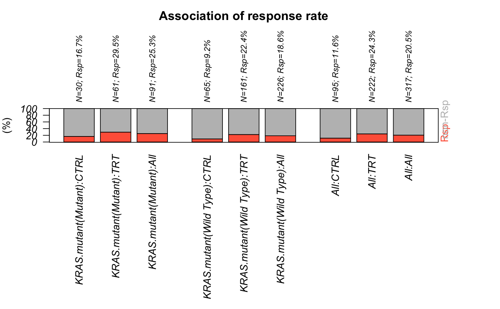

This function generates bar plots to compare response outcome summarization (e.g. response rate) across different groups (e.g. treatment arm, biomarker variable, demographics variable, full population vs bep, etc.)
PlotRspBar(data, outcome.var, binary = FALSE, rsp.response = c("CR", "PR"), rsp.nonresponse = c("SD", "PD", "NON CR/PD", "NE"), rsp.levels = c("CR", "PR", "SD", "NON CR/PD", "PD", "NE"), rsp.name = "Rsp", col = NULL, plot.count = FALSE, digits = 1, trt = NULL, trt.name = NULL, show.combine.trt = TRUE, compare.bep.itt = FALSE, bep = NULL, bep.name = NULL, itt.name = "Full", bep.indicator = 1, compare.var = FALSE, var = NULL, var.name = NULL, show.combine.var = TRUE, horiz = FALSE, main = "Association of response rate", sub = NULL, cex = 1, pdf.name = NULL, pdf.param = NULL, par.param = NULL)
| data | Input data frame. Rows are patients and columns are variables (e.g. demographics variables, time to event variables, biomarker variables, treatment indicator, etc.). One patient per row. |
|---|---|
| outcome.var | column name of the response variable (e.g. best overall response). entries with missing rsp value will be ignored in analysis. |
| binary | whether summarize the response rate by responder/nonresponder (if binary=TRUE), or by its original category (e.g. PD/SD/PR/CR). If binary is TRUE, responder categories and nonresponder categories should be specified in rsp.response and rsp.nonresponse (all values in the outcome column should be included in rsp.response and rsp.nonresponse), at the same time rsp.levels will be ignored. If binary is FALSE, rsp.levels should be specified to provide order of the categories. At the same time rsp.response and rsp.nonresponse will be ignored. |
| rsp.response | categories that should be considered as responder. |
| rsp.nonresponse | categories that should be considered as non responder. |
| rsp.levels | vector that indicates how to sort the response categories. This parameter will be ignored if binary is TRUE. |
| rsp.name | Display name for the responders. Default is "rsp". |
| col | color for different categories |
| plot.count | default is FALSE. By default percentages will be shown. If it is TRUE, will show counts instead |
| digits | see |
| trt | column name that indicates treatment variable. If this is not NULL, the program will summarize the response outcome within each treatment arm. |
| trt.name | treatment name to display |
| show.combine.trt | if this is TRUE, will show summarization of combined data across treatment arms as well |
| compare.bep.itt | whether want to generate two groups of bars to compare the summary statistics in full population (e.g. ITT) vs in BEP. If this is TRUE, paramemeter bep should be specified. If this is FALSE, parameters bep, bep.name, itt.name, bep.indicator will be ignored |
| bep | name of the column which indicates biomarker evaluable population. If it is null, patients who have non NA records in biomarker variable will be used as BEP. |
| bep.name | preferred display name of the biomarker evaluable population. If it is NULL, bep will be used. |
| itt.name | preferred display name of the full population (e.g. ITT). If it is NULL, "All" will be used. |
| bep.indicator | In the subpopulation column, which value is used to define the biomarker evaluable population. |
| compare.var | whether want to generate multiple groups of bars to compare the summary statistics in subgroups defined by var (e.g. categorical demographics or biomarker variable) . If this is TRUE, paramemeter var should be specified. If this is FALSE, parameters var, var.name, show.combine.var will be ignored |
| var | a vector of covariate names - the clinical covariate to test |
| var.name | preferred display names of the clinical covariates If it is NULL, var will be used. |
| show.combine.var | if this is TRUE, will show summarization of combined data across var levels as well |
| horiz | whether show barplot horizontally |
| main | main title of the barplot. Default is "Association of biomarker expression with response rate". |
| sub | footnote under the bar plot. Default is NULL. |
| cex | cex |
| pdf.name | name of output pdf file. If it's NULL, the plots will be displayed but not saved as pdf. Default is "rsp.barplot.pdf". |
| pdf.param | list of parameters that define pdf graphics device. See |
| par.param | list of parameters that define graphcial parameters. See |
a bar plot that summarizes response outcome
data(input) PlotRspBar (input, outcome.var="Response", binary=TRUE, rsp.response=c("CR","PR"), rsp.nonresponse=c("SD", "PD","NON CR/PD","NE",NA), trt="Arm", compare.var=TRUE, var="KRAS.mutant")#>